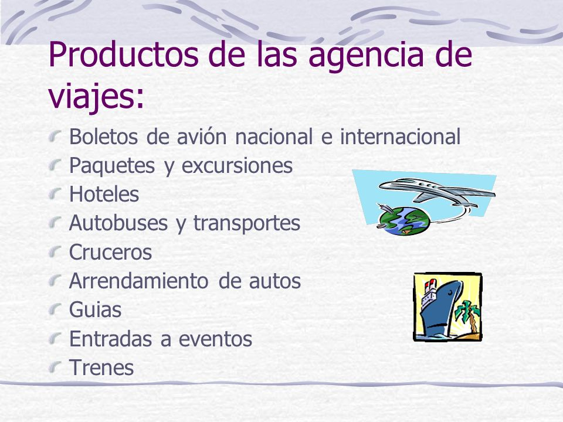

Informacion de Agencia de Viajes
Encontraras informacion resumida
Encontraras informacion resumida
Son empresas que se dedican profesional y comercialmente en exclusiva al ejercicio de mediación y/u organización de servicios turísticos, pudiendo utilizar medios propios en la prestación de los mismos. Su objetivo principal conseguir la satisfacción, la fidelización de los clientes que demandan servicios/productos turísticos de calidad que son distribuidos por las agencias de viajes y que cubren sus distintas necesidades y motivacione
Según su especialidad y actividad · Receptoras: los clientes son atraídos hacia sus ubicaciones.
Se ocupa de la producción de viajes y servicios turísticos a la oferta. Su producto será comercializado a través de las minoristas.
no pueden producir programas ni paquetes turísticos, su función es la venta al cliente final de los paquetes desarrollados anteriormente por la mayorista.
son aquellas que crean productos y los venden tanto a través de sus propias redes de agencias minoristas.
La agencia de viajes desarrolla tres funciones fundamentales; asesora, mediadora y productora, y que van a marcar claramente el perfil del tipo de agencia de viajes según su función principal de entre estas tres.
